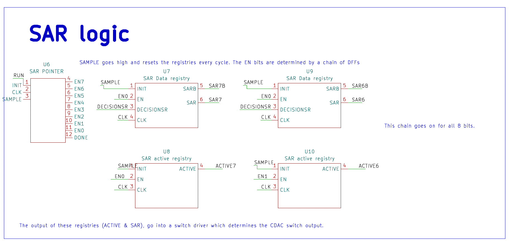

SAR Logic
SAMPLE goes high and resets all the registries at the start of every conversion cycle. Which bit is currently "active" is tracked by a SAR pointer — a one-hot token (EN7 down to EN0) that walks through the bits one at a time, one per clock, driven by a chain of DFFs.
Each bit has two registries reading that pointer: a SAR data registry that captures the comparator's decision (DECISIONSR) the one cycle its EN pulses, and holds that value (SAR/SARB) for the rest of the conversion; and an active registry that latches onto its own output the moment EN pulses, staying high for the rest of the conversion rather than pulsing just once like the pointer does. That's the key difference between the two: the pointer moves, the active registry remembers — the switch driver needs a bit's decision locked in for every remaining cycle, not just the one cycle it was made on.
The output of both registries (ACTIVE and SAR) feeds into the switch driver, which is the block that actually flips the CDAC switches.

What's Inside Each Block
Zooming in one level further, the DFF at the heart of every registry is a full custom cell — a master-slave latch pair built from NAND2/NAND3 gates and inverters, with an async reset — not pulled from a standard cell library.

And the switch driver itself — the block the registries hand off to — is gate-level combinational logic that only fires once CONVERT and ACTIVE are both high, turning that bit's SAR decision into the actual CDAC control signals (CMB, A, B, CONVERTC).